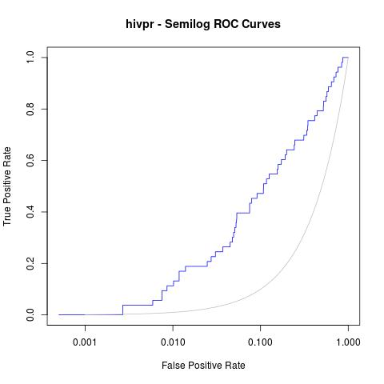

Calculating ROC curves¶
(Original entry published in CBDD Research Group Blog.)
Here you will find a a short tutorial about how to generate receiver operating
characteristic (ROC) curves and other statistics after running rDock molecular
docking (for other programs such as Vina or Glide, just a little modification on
the way dataforR_uq.txt file is interpreted will make it work, see below).
I assume all of you are familiar with what ROC curves are, what are they for and how they are made.
Just in case, a very brief summary would be:
ROC curves are graphic representations of the relation existing between the sensibility and the specificity of a test. It is generated by plotting the fraction of true positives out of the total actual positives versus the fraction of false positives out of the total actual negatives.
In our case, we will use it for checking whether a docking program is able to select active ligands with respect to inactive ligands (decoys) and whether it is able to select these active ligands in the top % of a ranked database.
R Library ROCR is mandatory (try with command
install.packages("ROCR")in R before downloading from source).
The example selected for this tutorial is a system from the DUD benchmark set, “hivpr” or “hiv protease”.
These are the files you will need (all can be downloaded in this Dropbox shared folder):
List of active ligands (
ligands.txt)List of inactive ligands (
decoys.txt)Output file with the docked poses of each ligand with the corresponding docking scores (
hivpr_all_results.sd.gz)R script with all the R commands in this tutorial (
ROC_curves.R)
Before getting into R, the resulted docked poses have to be filtered out for only having the best pose for each ligand (the smallest score – or highest in negative value). To do so run:
gunzip hivpr_all_results.sd.gz
sdsort -n -s -fSCORE hivpr_all_results.sd | sdfilter -f'$_COUNT == 1' > hivpr_1poseperlig.sd
# sdsort with -n and -s flags will sort internally each ligand by increasing
# score and sdfilter will get only the first entry of each ligand.
sdreport -t hivpr_1poseperlig.sd | awk '{print $2,$3,$4,$5,$6,$7}' > dataforR_uq.txt
# sdreport will print all the scores of the output in a tabular format and,
# with command awk, we will format the results.
Note
sdsort and sdreport are really useful tools for managing sd formatted
compound collections. They are very user-friendly and free to download. They
are provided along with rDock software in the Download
section of the website.
This dataforR_uq.txt (also in the Dropbox folder) file must contain one
entry per ligand with the docked scores (what R will use to rank and plot the
ROC curves).
R commands for generating ROC curves¶
Then, run the following commands in R for plotting the ROC curves:
# load ROCR
library(ROCR);
# load ligands and decoys
lig <- unique(read.table("ligands.txt")[,1]);
dec <- unique(read.table("decoys.txt")[,1]);
# load data file from docking
uniqRes <- read.table("dataforR_uq.txt", header=T);
# change colnames
colnames(uniqRes)[1]="LigandName";
# add column with ligand/decoy info
uniqRes$IsActive <- as.numeric(uniqRes$LigandName %in% lig)
# define ROC parameters
# here INTER is selected to compare between ligands using SCORE.INTER
# this could be changed for also running with other programs
predINTERuq <- prediction(uniqRes$INTER*-1, uniqRes$IsActive)
perfINTERuq <- performance(predINTERuq, 'tpr', 'fpr')
# plot in jpg format with a grey line with theoretical random results
jpeg("hivpr_Rinter_ROC.jpg")
plot(perfINTERuq, main="hivpr - ROC Curves", col="blue")
abline(0, 1, col="grey")
dev.off()
Which will give us the following plot:

Afterwards, other useful statistics such as AUC or Enrichment factors can also be calculated:
# AUC (area under the curve)
auc_rdock <- performance(predINTERuq, "auc")
auc.area_rdock <- slot(auc_rdock, "y.values")[[1]]
cat("AUC: \n")
cat(auc.area_rdock)
cat("\n\n")
AUC:
0.7700965
# Enrichment Factors
EF_rdock <- perfINTERuq@y.values[[1]] / perfINTERuq@x.values[[1]]
EF_rdock_1 <- EF_rdock[which(perfINTERuq@x.values[[1]] > 0.01)[1]]
EF_rdock_20 <- EF_rdock[which(perfINTERuq@x.values[[1]] > 0.2)[1]]
cat("Enrichment Factor top 1%:\n")
cat(EF_rdock_1)
cat("\n\n")
Enrichment Factor top 1%:
11.11817
cat("Enrichment Factor top 20%:\n")
cat(EF_rdock_20)
cat("\n\n")
Enrichment Factor top 20%:
3.200686
Moreover, a good analysis of these curves is to re-plot them in semilogarithmic scale (x axis in logarithmic scale). This way, one can focus on the early enrichment of the database and have a more detailed view of the selected actives in the top % of all the ligands.
jpeg("hivpr_semilog_ROC.jpg")
rdockforsemilog=perfINTERuq@x.values[[1]]
rdockforsemilog[rdockforsemilog < 0.0005]=0.0005
plot(rdockforsemilog, perfINTERuq@y.values[[1]],type="l", xlab="False Positive Rate", ylab="True Positive Rate", xaxt="n", log="x", col="blue", main="hivpr - Semilog ROC Curves")
axis(1, c(0, 0.001, 0.01, 0.1, 1))
x<-seq(0, 1, 0.001)
points(x, x, col="gray", type="l")
dev.off()
Obtaining the following semi-logarithmic ROC curves:
